Cuidado nos detalhes
Atenção ao veículo durante o serviço.
Da lavagem simples à estética automotiva: cuidado e dedicação para deixar seu carro com uma aparência incrível.
Atenção ao veículo durante o serviço.
Opções de lavagem e cuidado para seu carro.
Consulte os valores pelo WhatsApp.
Conheça nossas opções de lavagem e estética automotiva.
Para manter seu veículo limpo no dia a dia.
Consultar valor →Consulte os detalhes dessa opção de lavagem para seu veículo.
Consultar valor →Consulte as condições e os detalhes dessa modalidade de lavagem.
Consultar valor →Uma opção para quem procura atenção especial aos detalhes.
Consultar valor →Consulte as opções de polimento disponíveis para seu veículo.
Consultar valor →Consulte as opções de proteção para a pintura do seu carro.
Consultar valor →Serviço voltado à recuperação da aparência dos faróis.
Consultar valor →Veja alguns carros e motos cuidados pela GD Lava Car. Clique em uma foto para ampliar.
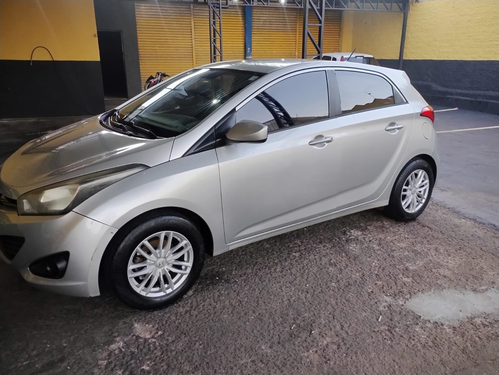
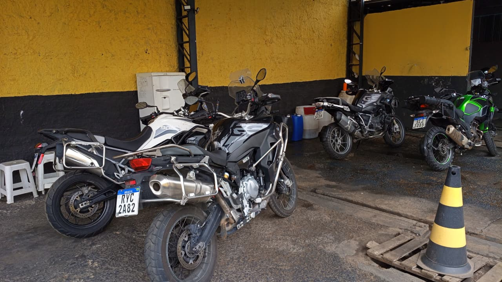
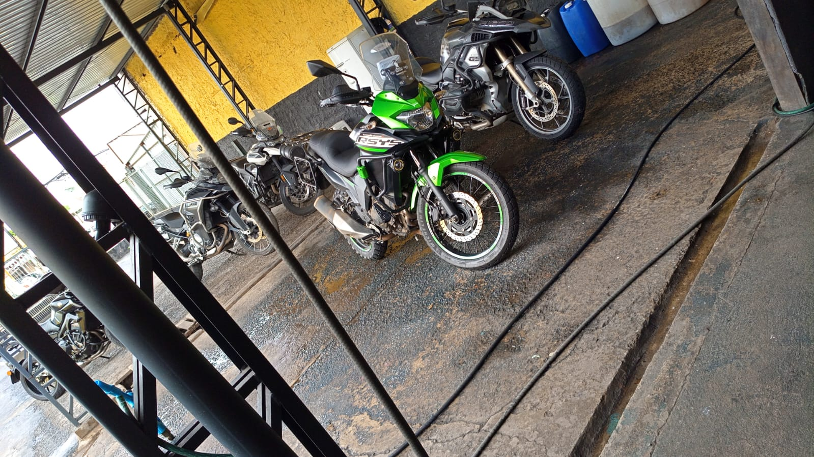
.jpeg)

Confira alguns dos trabalhos realizados pela GD Lava Car.
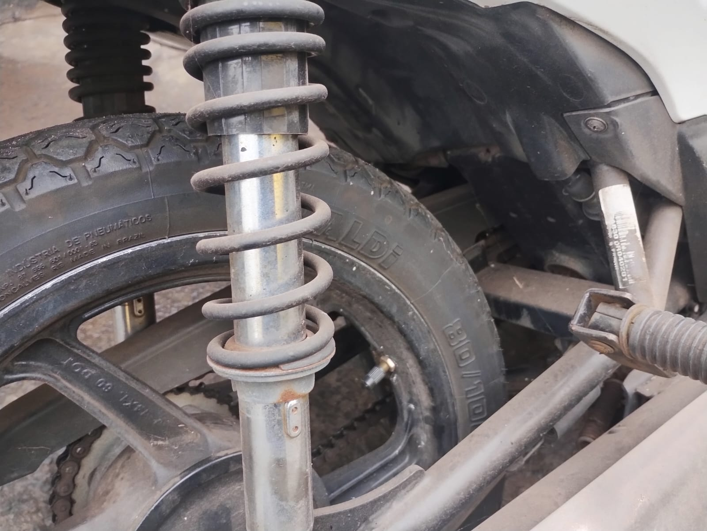
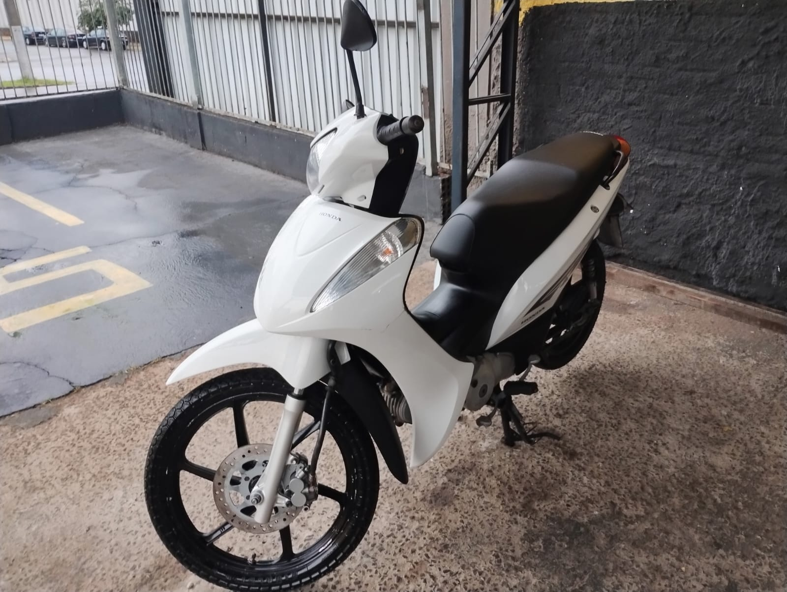
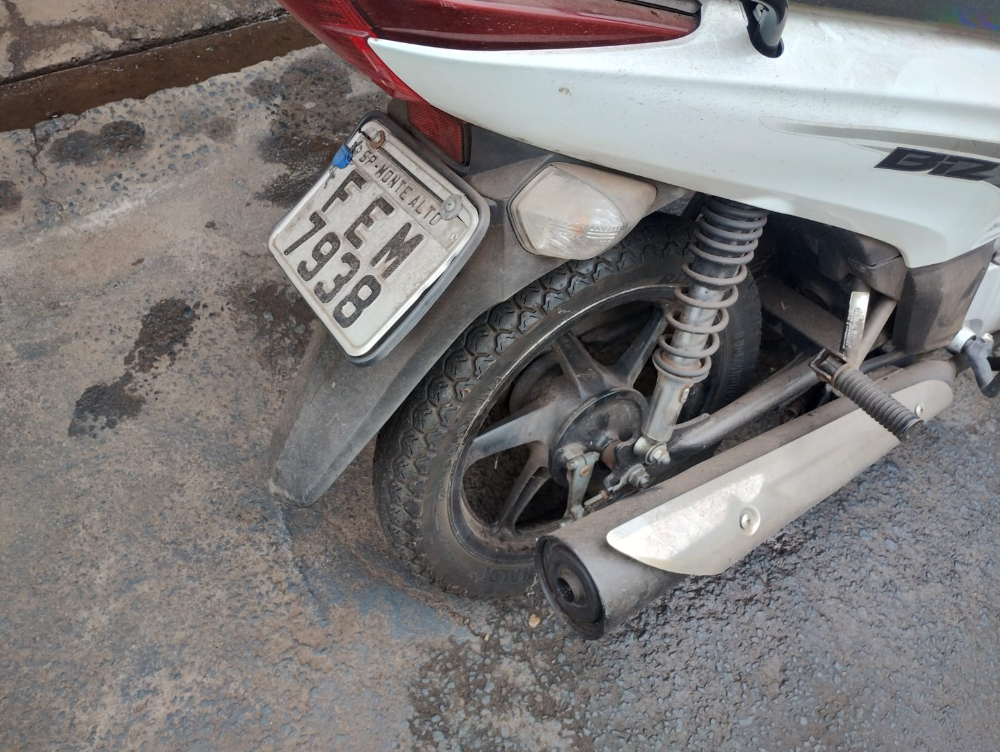
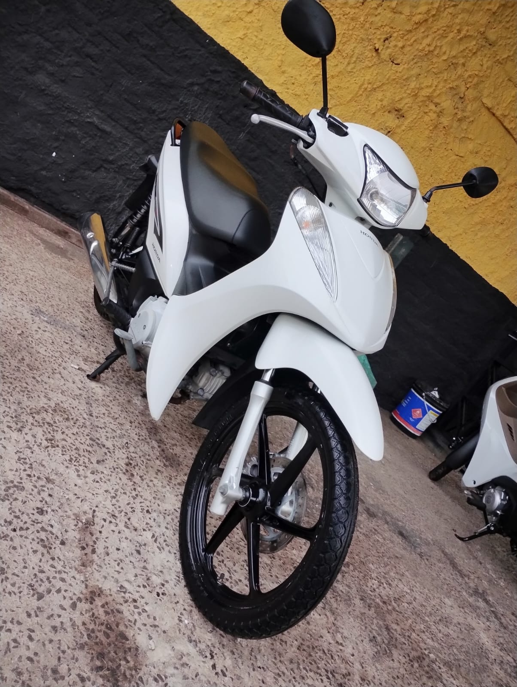
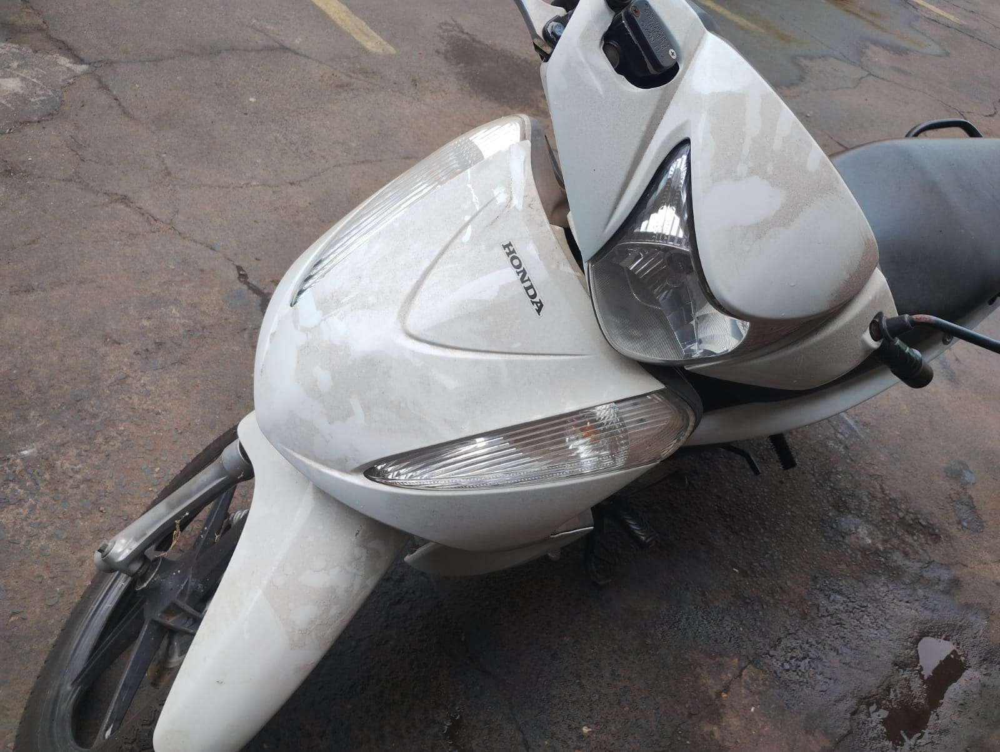
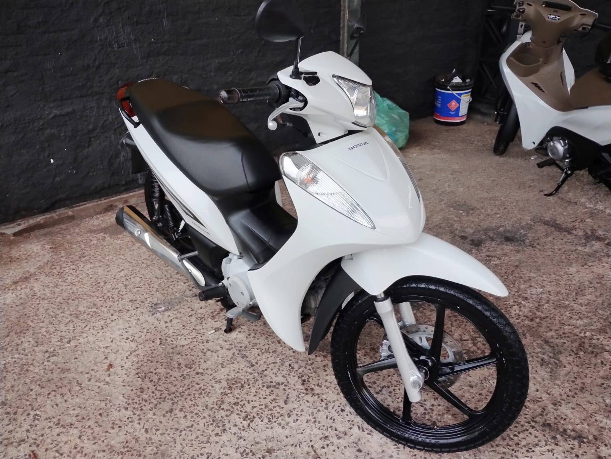
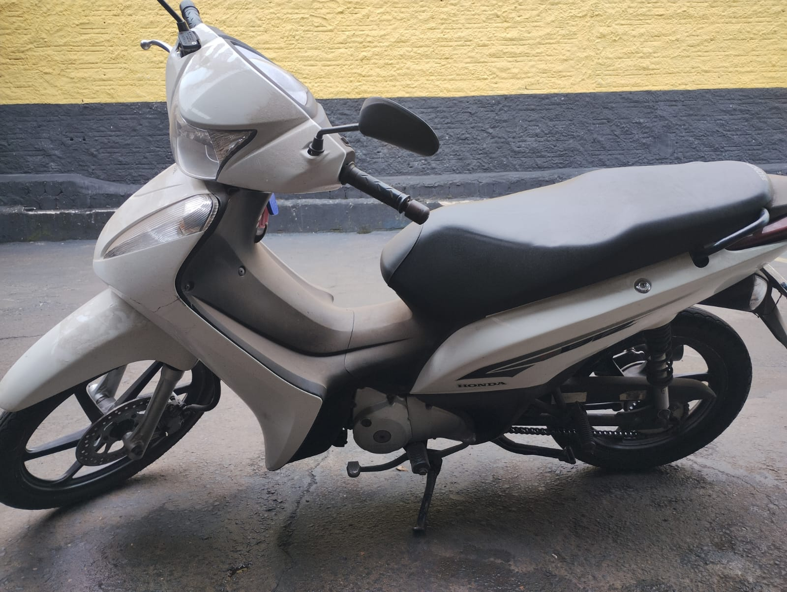
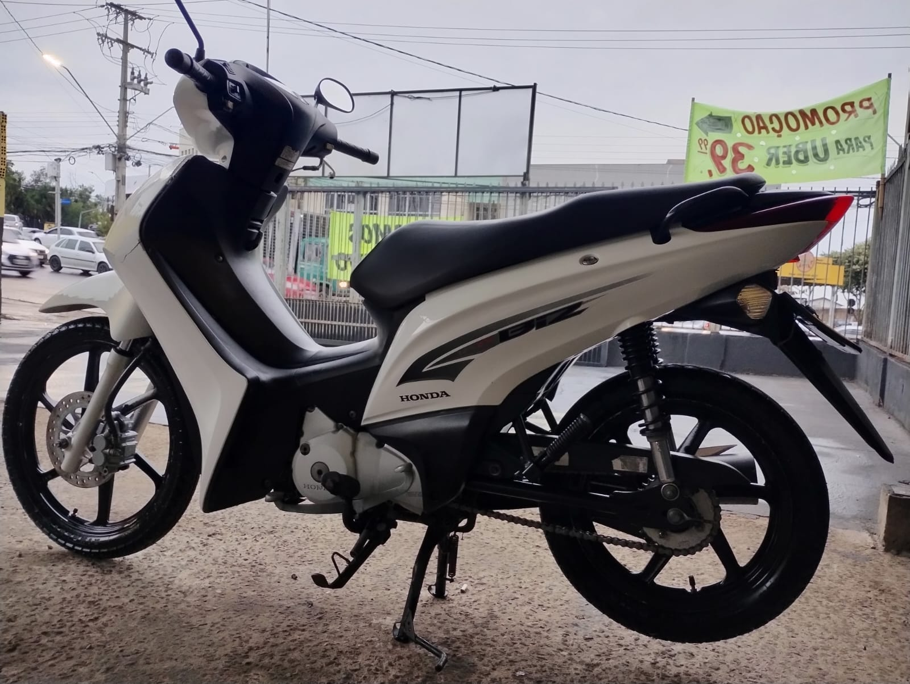
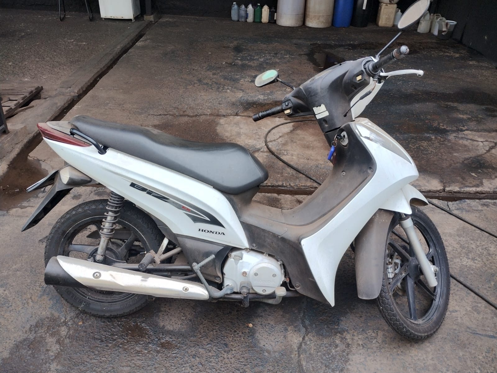
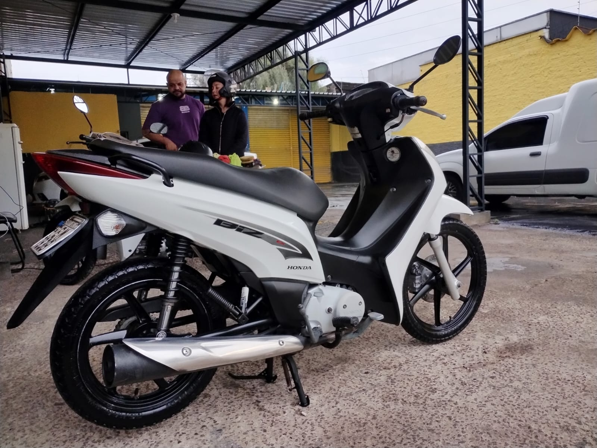
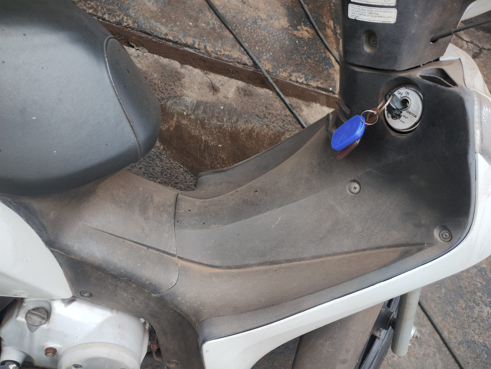
Clique no número para conversar diretamente com a GD Lava Car.
WhatsApp: +55 (43) 9906-5643Av. Winston Churchil, 789 - Fugman, Londrina - PR, 86079-080
Ver endereço no Google Maps